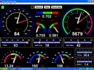
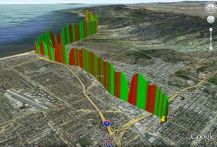

OBD Users
Wondering how to get started? Or what others are doing with these OBD ‘chips’? Here are examples of what a few of our customers are doing…
Circuit Boards - have you been thinking about making your own?
...
Dennis Shutt has, and he's willing to share his work with you. He's created layouts for each of our OBD chips and has saved them in
Cadsoft Eagle file format. Anyone that has tried to lay out a board while keeping things tight (and not using too many jumpers) will appreciate his efforts.
Click here to download the latest version of his work (it's a 64K zip file).

Dennis also created a data logger app, originally using Visual Basic, and then in C++. Switching to C means he could make it self contained, and pretty small (it was only 48K), so who knows, maybe it'll even run on a handheld. Here's a small picture of his main screen.
Dennis seems to have dropped support for this lately, but you may still be able to show your appreciation for his circuit board layouts, or would like to provide feedback, by writing him at dennisc99@mchsi.com
Jon GrosJean has been working on some boards too.
… and so has Bart Kuijper.
Bart has been working on an ELM327 Bluetooth interface, and has offered to shared his printed circuit board details with our users. (Even if Bluetooth is not what you want, he’s done 98% of the PCB work for you!)
The Eagle printed circuit board project is on GitHub, where it’s easily downloaded:
https://github.com/Spartelfant/ELM327-BT
In addition, Bart has created an Eagle library with all of the current Elm OBD ICs. See the ‘Elm Electronics’ library in the parts directory of his project.
If you have a comment or suggestion, Bart would like to hear from you. You can write to him at:
spartelfant@gmail.com
J1587 Scanner
'Palm Springs Jim' has built a J1587 to Bluetooth interface using our ELM325 J1708 (and J1587) Interpreter chip. His
'J1587 Scanner for Motor Home' blog shares all of the details, and also provides the source code for a Java app that displays the data. A complete project that is certainly worth a look.
LabVIEW Users
... will appreciate the work that
Dan Beaven has done. In his words, ELMULATOR is software written in Labwindows/CVI that emulates the base functionality of the ELM OBD-II communications boards formerly made by
ScanTool.net. This software is a beta version and no guarantees are made as to its stability. You will need the Labwindows Run Time Engine, available from
National Instruments to run it.
Dan offers his software as a free download, as long as it's for non-profit use. Click here to download the zip file (60K).
J1587 Scanner
'Palm Springs Jim' has built a J1587 to Bluetooth interface using our ELM325 J1708 (and J1587) Interpreter chip. His
'J1587 Scanner for Motor Home' blog shares all of the details, and also provides the source code for a Java app that displays the data. A complete project that is certainly worth a look.
Mark Neugebauer
...has been looking into protection for our automotive circuits from ESD, polarity reversals, etc. He has taken our basic 'Example Application' circuit for the ELM323 and added protection for almost anything that could be experienced in a harsh automotive environment. You will find that he has been quite thorough - perhaps you would like to add some of his ideas to your circuit, (not just an ELM323 circuit). For the curious, Mark notes that
On Semiconductor's
AN843 proved an excellent resource.
Mark has also offered to share some of his designs, provided that you use them for your own personal use and not for profit. If you wish to use them in a commercial project, you can deal directly with Mark. Click the following links to download his latest (v7) schematic, his circuit board top or bottom trace patterns, or the parts placement diagram. For those wondering just how to lay out a board, Mark has even provided a picture of his.
NMEA 2000 Project
We've had a number of people ask if our ELM327 or ELM329 integrated circuits are suitable for use with NMEA 2000 (or N2k) interfaces. They most certainly are, as Owen shows you with his interface. It's described quite well on this web page:
It uses a Bluetooth interface (HC-06) to allow connection to a number of handheld devices. The schematic for what he's done is also included, or may be downloaded here:
OBD for EPOC
Mark Neugebauer has another package to offer for some of the handheld users out there. In his words, he has created some "very simple but efficient OBD software for EPOC handhelds like the Psion Series5 or Osaris". He says that other devices (such as the Nokia Communicator) also run on EPOC, so some people may even be able to talk to their car by telephone!
Mark has put all you need in this 168K zip file. <-click to download
The zip archive contains:
- a screenshot from the EPOC-emulator
- the source code and exec for the OBD software
- the source code and exec for the ELM323 simulator for EPOC
There may be a little work involved to interface your ELM hardware to the Psion/Osaris, but if you've already made your own OBD interface, this shouldn't be a problem.
Mark has done a lot of work here - if you're appreciative, be sure to tell him so.
OBD GPS Logger

Gary Briggs offers some very capable software that is able to save both OBD and GPS data for later viewing (as well as playback through
OBDSim). This allows for 3D plots such as the photo at the right (plotted by Google). The software runs on Mac OSX, Linux, and Windows (through cygwin).
There are more examples, and a complete description at Gary's OBD GPS Logger site.
OBD Logger
Jonathan Senkerik has posted some very interesting logger software that he originally developed for the ELM322, but he now reports that it works quite well with the ELM320 and ELM323 circuits too. He's got versions to run under Windows or Perl that would be of interest to many users. Be sure to
visit Jon's site for a free download (and of course, if you use his work, drop him a line to show your appreciation).
OBDSim
Looking for an ELM327 simulator?
Gary Briggs has created one that supports many of the AT commands, and is also able to generate data based on log files. It's even smart enough to interpolate data in order to provide 'continuous' readings.
There are a number of other features, too. For example, it can be enhanced with plugins, and it can make data from other (non OBDII) systems appear to be OBDII. This last capability could allow ELM327 software to work with older OBDI vehicles, through OBDSim.
Be sure to visit Gary's OBDSim web site for all the information, and a download.
Palm Users
... will appreciate what Dana Peters has done. He's made a slick little program that logs many of your vehicle parameters as you drive. Can read and reset trouble codes, too. Best of all, it's a free download from Dana's web site:
http://qcontinuum.org/obdgauge/ It's fun to watch the little green bars scroll across the screen (and stomp on the gas trying to make the 'Calculated load value' run off-screen), but please - keep your eyes on the road!
wOBD Software
The people at
obd2crazy.com have been busy building software for our OBD ICs as well. They tell us that
their latest beta release (free download) has some very useful features, including configurable polling, logging (with data export), and DTC reading and resetting. Apparently it can also read sequential blocks of data, and has a debugging mode which allows users to type commands, and see results directly. Don't just visit their site (
http://www.obd2crazy.com/) for the software though, as there is also a lot of good OBD info there too.


{kind=link}